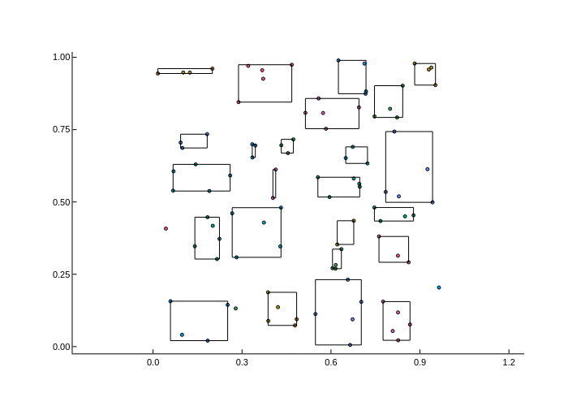
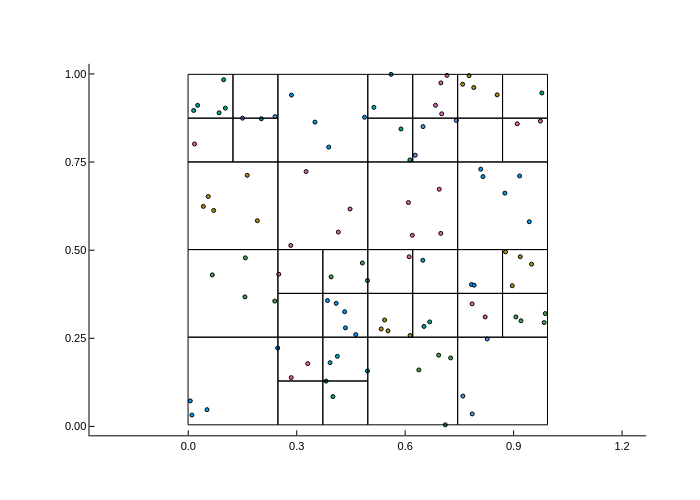

Trees
Overview
The Trees module is a short module defining the interface for dealing with tree-like data structures. It relies on AbstractTrees.jl for various utilities related to traversing trees and tree iterators.
The module defines the concrete type ClusterTree which can be used to partition elements of geometrical nature into a hierarchical structure according to an AbstractSplitter. This structure is currently used by the HMatrices.jl and IFGF.jl.
Tree-like data structures should inherit from AbstractTree, and are expected to implement the children and parent methods. Currently, one concrete implementation of AbstracTree is provided by WavePropBase: the ClusterTree.
ClusterTree
A ClusterTree{T,S,D} is a parametric type used to hierarchically cluster elements of type T into container of type S. Additionally, each node of the tree has a data field of type D (defaults to Nothing) that can be used to store additional node-specific information. The elements contained in a given node can be retrieved using elements(node), which returns an iterable collection of elements of type T.
To construct a ClusterTree, you must pass the elements and an AbstractSplitter implementing the desired splitting strategy and stopping criterion: concrete subtypes of AbstractSplitter should implement the should_split(clt,spl::AbstractSplitter) and split!(clt,splt::AbstractSplitter) methods. Refer to the documentation of each concrete subtype of AbstractSplitter (you can type subtypes(AbstractSplitter) to see what they are) for more information about the available splitting strategies and parameters.
An example of how to construct a ClusterTree is shown below:
using WavePropBase
pts = rand(Geometry.Point2D,100)
splitter = Trees.GeometricMinimalSplitter(nmax=5)
clt = Trees.ClusterTree(pts,splitter)ClusterTree with 100 elements of type StaticArrays.SVector{2, Float64}clt now represents the root of the tree. To visualize clt as a node, you can simply call plot(clt). More interestingly, if you want to plot e.g. the leaves of clt, you can do:
using Plots
plot(WavePropBase.IO.PlotTree(),clt;predicate=Trees.isleaf)
savefig("clt1.png")
Changing the clustering strategy is as simple as:
splitter = Trees.DyadicSplitter(nmax=5)
clt = Trees.ClusterTree(pts,splitter)
plot(WavePropBase.IO.PlotTree(),clt)
savefig("clt2.png")
In the example above the elements were simply points, which were sorted into container of HyperRectangle type according to their coordinates. You can sort elements of other types as long as they implement the center method; for instance, you may build a ClusterTree of triangle elements as long as you extend the method center from WavePropBase to work with your custom triangle type.
Finally, when calling ClusterTree(els,splitter), the elements in els are permuted internally so each node of the tree stores a contiguous subset of els. To avoid mutating els, and internal copy is made is stored in the ClusterTree object. Passing the keyword argument copy_elements=false will skip the deepcopy, and mutate instead the els argument passed. The permutation of els performed during the tree construction can be recovered using loc2glob.
Index
WavePropBase.Trees.AbstractSplitterWavePropBase.Trees.AbstractTreeWavePropBase.Trees.CardinalitySplitterWavePropBase.Trees.ClusterTreeWavePropBase.Trees.ClusterTreeWavePropBase.Trees.DyadicSplitterWavePropBase.Trees.GeometricMinimalSplitterWavePropBase.Trees.GeometricSplitterWavePropBase.Trees.PrincipalComponentSplitterWavePropBase.Trees._binary_split!WavePropBase.Trees.childrenWavePropBase.Trees.containerWavePropBase.Trees.container_typeWavePropBase.Trees.depthWavePropBase.Trees.element_typeWavePropBase.Trees.elementsWavePropBase.Trees.index_rangeWavePropBase.Trees.isleafWavePropBase.Trees.isrootWavePropBase.Trees.loc2globWavePropBase.Trees.parentWavePropBase.Trees.root_elementsWavePropBase.Trees.should_splitWavePropBase.Trees.split!